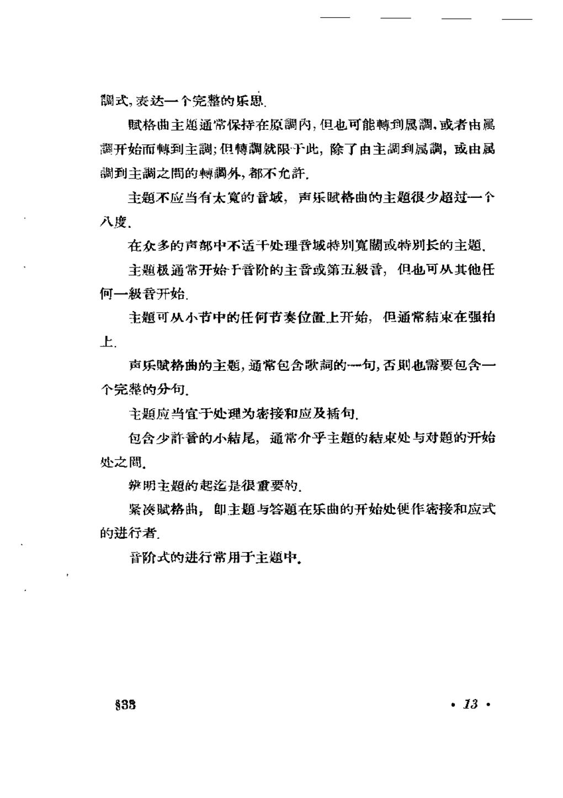

PDF 第 17 页
第二章 主题：提要
调式，表达一个完整的乐思
赋格曲主题通常保持在原調内，但也可能轉到属調，或者由属
开始而轉到主調；但博調就限下此，除了由主调到属調，或由属
调到主之間的轉调外，都不允許.
主题不应当有太寬的音域，声乐赋格曲的主题很少超过一个
入度.
在众多的声部中不适于处理普城特别寬或特别长的主题
主题极通常开始于音阶的主音或第五级晋，但也可从其他任
何一级音开始.
主题可从小节中的任何节奏位置上开始，但通常結束在强拍
上.
个完整的分句.
主题应当宜于处理为密接和应及插句.
包含少許音的小結尾，通常介乎主题的結束处与对题的开始
处之間.
辩明主题的起迄是很重要的.
紧赋格曲，即主题与答题在乐曲的开始处便作密接和应式
的进行者.
音阶式的进行常用于主题中，
38
·13·
- 主题必须可辨认、可重复、可发展
主题不是随便一句旋律。首部要有清楚的动机与节奏标记，使它在转调、扩大、倒影或密接中仍能被听出；同时要能承载答题、对题和间插段。
“主题应当宜于处理为密接和应及插句。” - 主题的调性、长度、音域与收束位置
多数主题留在主调或只触及属调；声乐赋格常不超过一个八度；主题通常结束在强拍，长度要足以成为完整乐思，又不能长到妨碍多声部进入。
“主题不应当有太宽的音域，声乐赋格曲的主题很少超过一个八度……主题可从小节中的任何节奏位置上开始，但通常结束在强拍上。”